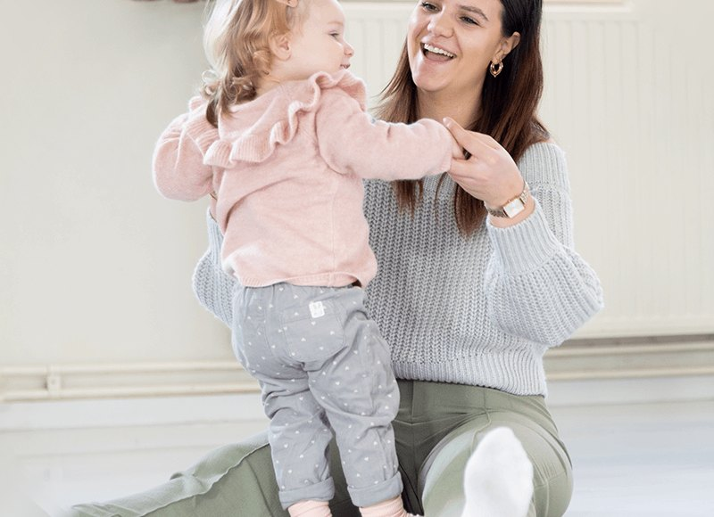
1 t/m 2,5 jaarDreumesdans
Een ouder-en-kindles vol muziek, verhaaltjes en materialen. Een heerlijk momentje samen, ook leuk met opa of oma.
€ 24 p/mMeer info
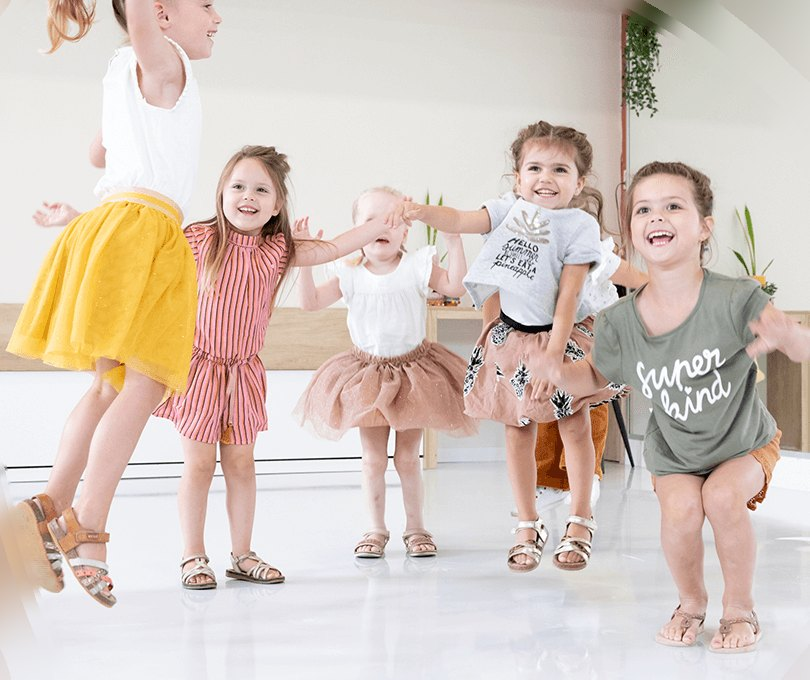
Dans- en theaterles voor kinderen van 1 t/m 20 jaar in Roosendaal. Groot of klein, met dansbenen of tien linkertenen: bij Sisa is iedereen welkom.
Iedere week dansen, zingen of toneelspelen in een kleine groep. Instromen kan het hele seizoen, en de eerste les is gratis.
1 t/m 5 jaar

1 t/m 2,5 jaarEen ouder-en-kindles vol muziek, verhaaltjes en materialen. Een heerlijk momentje samen, ook leuk met opa of oma.
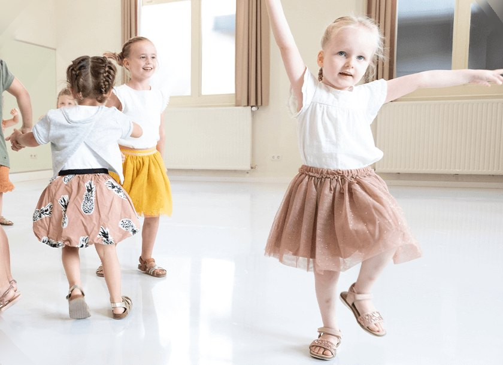
2,5 t/m 3 jaarSpelenderwijs je lichaam leren kennen op muziek. Iedere maand een nieuw thema, en je doet mee aan een echte voorstelling.
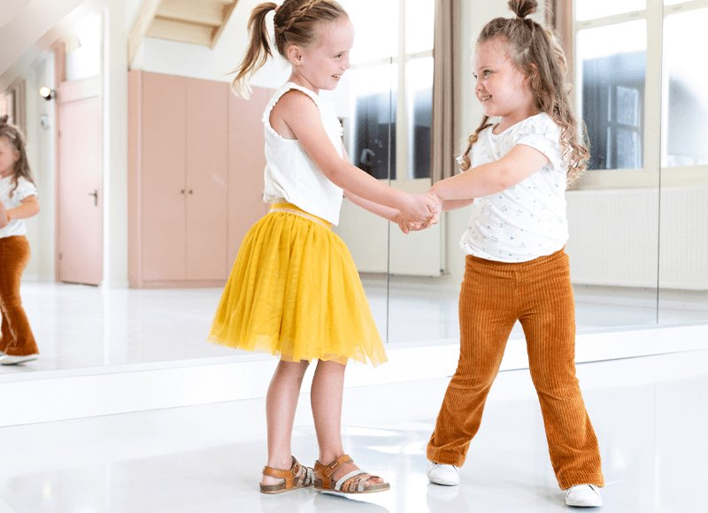
4 en 5 jaarEchte danspasjes op liedjes van K3 of Kinderen voor Kinderen. De beginselen van streetdance en jazz-ballet, en altijd een disco aan het eind.
6 t/m 20 jaar
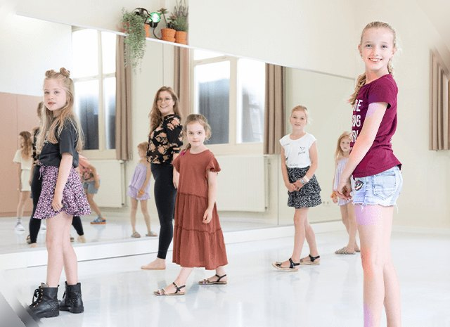
6 t/m 20 jaarModerne dans, streetdance, hiphop, showdance en jazz-ballet door elkaar. Zo leer je iedere week iets nieuws.
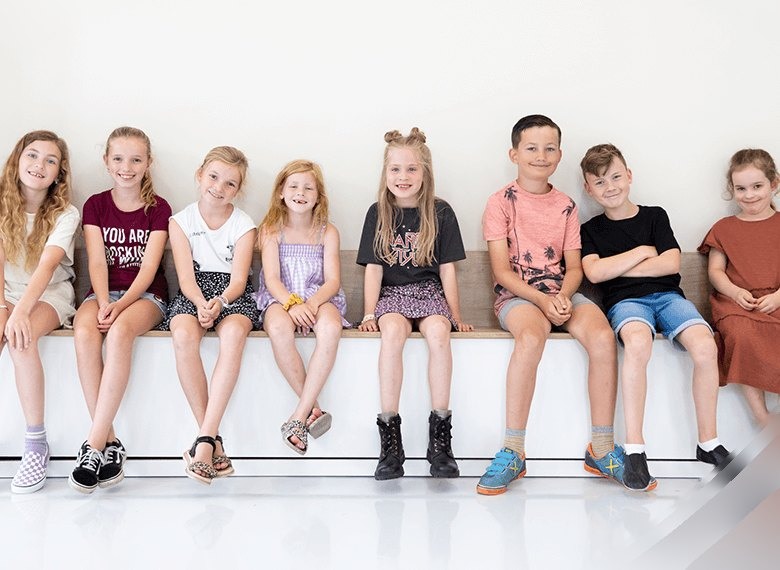
7 t/m 12 jaarToneelspelen, zingen en dansen. Een heel seizoen werken we toe naar onze eigen musical in Theater De Kring.
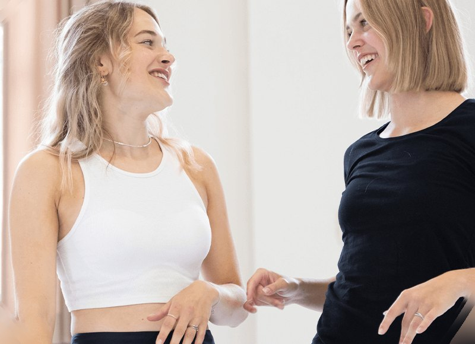
13 t/m 20 jaarImprovisatie, teksttoneel, liedjes en dans met een echt theaterscript. In de zomer staat de musical in De Kring.
Het seizoen loopt van 31 augustus 2026 tot 27 juni 2027. Twijfel je tussen twee groepen? Bel of app gerust even.
Tijdens schoolvakanties en feestdagen zijn we gesloten. De herfstvakantie is van 17 t/m 25 oktober 2026.
Eerst kijken of Sisa jouw ding is? Doe gratis een keer mee.
Prijzen bij één les per week. Het seizoen heeft 10 lesmaanden; in juli en augustus betaal je niets.
Alle leerlingen vanaf 2,5 jaar doen mee aan onze voorstellingen in Schouwburg De Kring. Dit seizoen staan er vier op de planning.
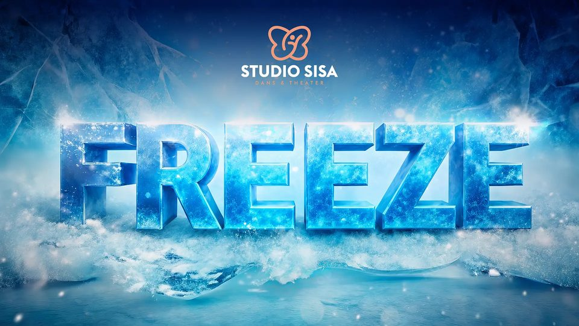
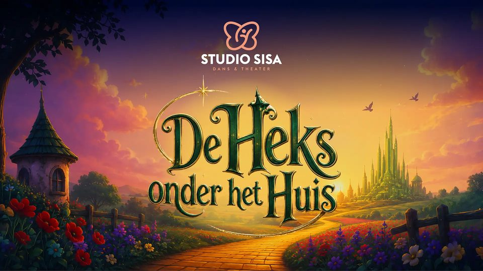
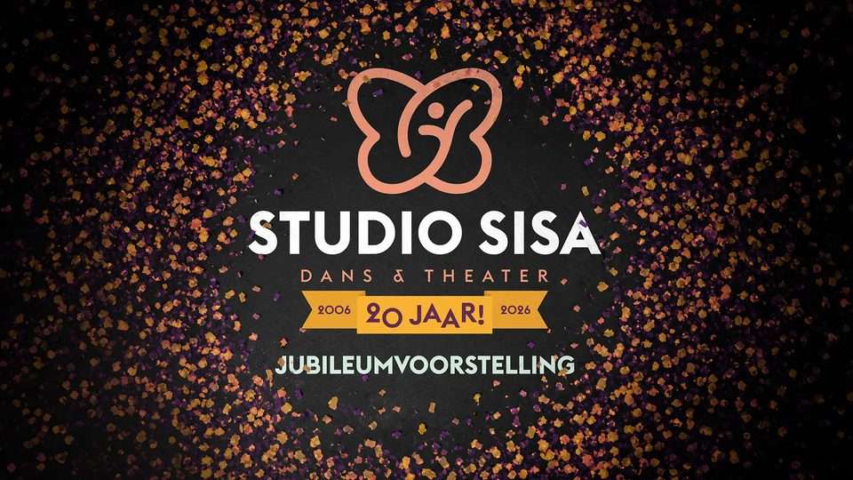
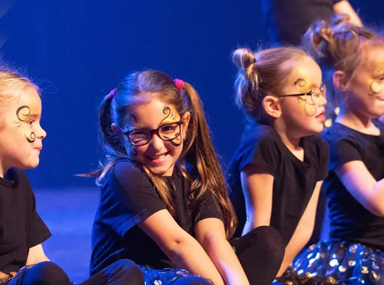
We doen niet aan audities of wedstrijden. Hoofdrol of kleinere rol, we zijn allemaal even belangrijk. Op het podium zie je hoeveel zelfvertrouwen kinderen bij Sisa krijgen.
Gratis proefles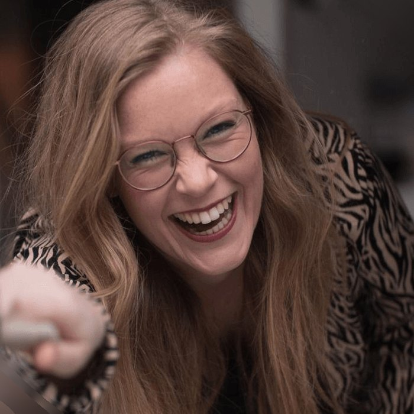
Als zestienjarige opende Malou van Rede haar eigen dansschool, de eerste lessen nog in haar woonkamer. In 2006 ging Studio Sisa van start met 15 leerlingen en groeide het uit tot een van de grootste dansscholen van West-Brabant.
Sinds 2021 zit Studio Sisa aan de Willemstraat: kleiner, knus en persoonlijk, met dezelfde passie. Zo krijgt iedere leerling de aandacht die hij of zij verdient. Niet vanuit winst, maar vanuit plezier in dans en theater.
Hoe je eruitziet, waar je vandaan komt, wie je bent: hoe kleurrijker, hoe beter. Ook kinderen met een beperking zijn van harte welkom.
Hier zijn we allemaal gelijk En speelt niemand de baas Roddelen is niet nodig En pesten hoort hier niet Hier zijn we onszelf Steunen we elkaar Troosten we elkaar Helpen we elkaar Hier dansen we met een lach En zingen we met plezier Want waar is ons thuis? Juist: dat is hier.
Voor kinderopvang, scholen en verzorgingscentra. Elk thema is mogelijk.
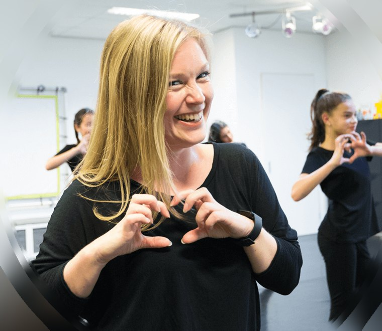
Dans- en dramaworkshops op kinderdagverblijven, peuterspeelzalen, BSO's, basisscholen, middelbare scholen en het speciaal onderwijs. Desgewenst werken we naar een presentatie of voorstelling toe, met aandacht voor houding, zelfvertrouwen en plezier.
Neem contact op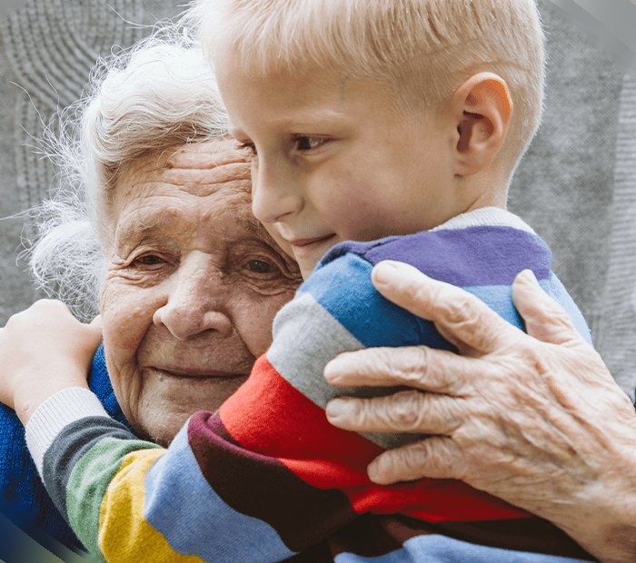
Jonge kinderen en senioren samen in beweging. Juf Malou komt met haar peuters naar verzorgingscentra voor actieve dans- en beweeglessen met muziek, opdrachtjes en instrumenten. Geen verplichte pasjes, maar puur plezier.
Neem contact opIedereen kan meedoen met Sisa, ook als je nog geen podiumbeest bent. Tijdens de lessen krijg je steeds meer zelfvertrouwen, tot je straks zomaar meedoet aan de voorstelling in De Kring.
Natuurlijk! Veel kinderen met een beperking of extra ondersteuningsbehoefte kunnen meedoen met onze reguliere lessen. We kijken graag samen wat het beste past. Neem gerust contact op.
Tuurlijk. Je kunt wachten in de wachtruimte of de kleedkamer en de les volgen via een tv-scherm. Bij de dreumeslessen dansen ouders actief mee; vanaf 2,5 jaar gaan kinderen zelfstandig de les in.
Welnee, dansen is juist stoer! Denk maar aan Timor Steffens, die met Madonna danste.
Wat jij fijn vindt, als je er maar lekker in kunt bewegen. In de zaal dansen we op blote voeten, sokken of balletschoenen.
Gratis bij Winkelcentrum de Boulevard (bij de Aldi en Action). Fietsen kunnen bij de fietsenrekken van het café of netjes tegen de gevel, zolang de stoep vrij blijft.
Plan zelf een proefles in en dan zien we je snel bij Studio Sisa. Eerst een vraag? Bel, app of mail ons gerust.